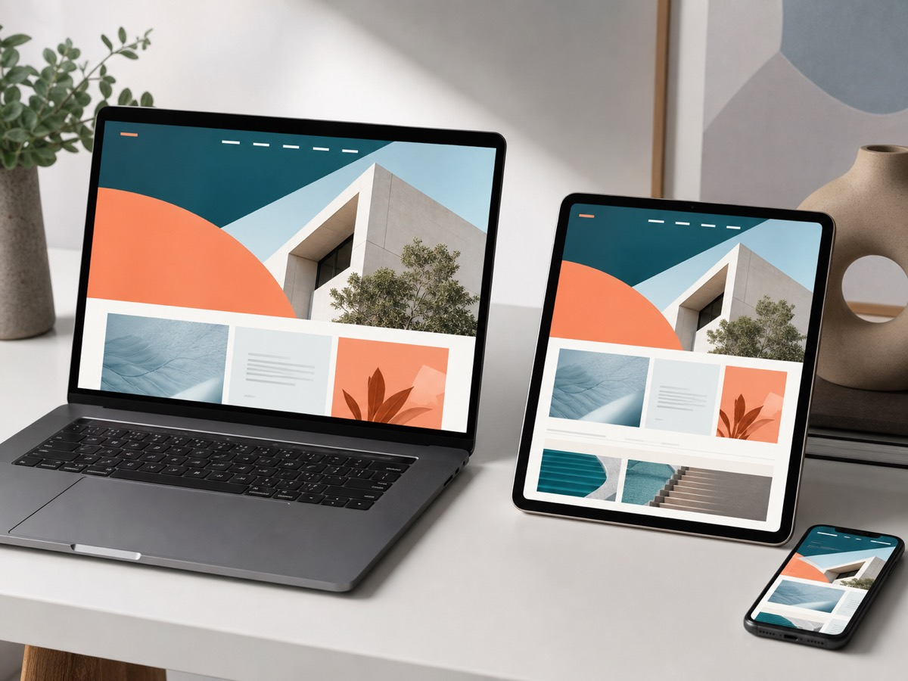

Client intake
Structured project setup, source files, owners, and the first agreed milestones.
Project proposal - 10 July 2026
A focused two-week sprint to replace scattered intake, status updates, and handoffs with one dependable client workspace.

Structured project setup, source files, owners, and the first agreed milestones.
A clear client view of progress, open decisions, deliverables, and upcoming dates.
Internal notes, ownership, launch checks, and documentation for the next phase.
The sprint is organized around a usable review link from the first week, with decisions made against working software.